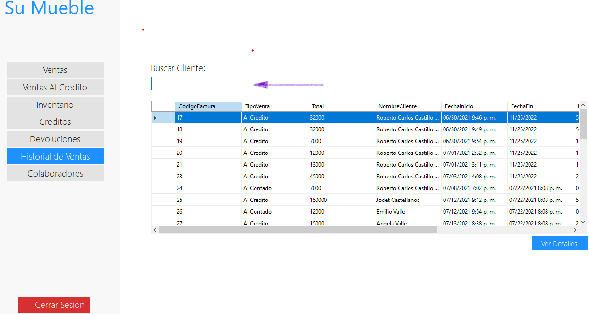
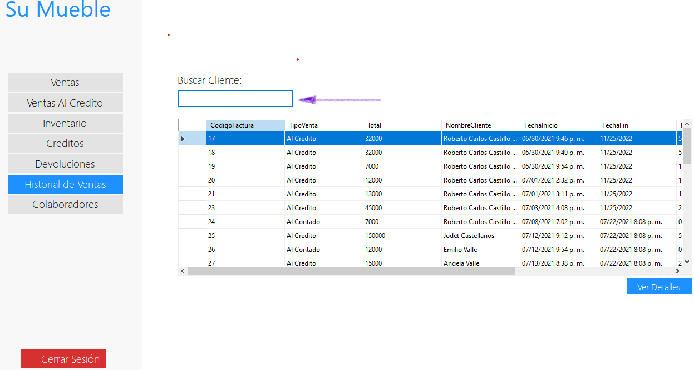

Una vez seleccionado ver el formulario de Historial donde podrá buscar las ventas solo por el nombre del Cliente, podrá ingresar el nombre de cliente para ver sus comprar realizadas

Una vez seleccionado ver el formulario de Historial donde podrá buscar las ventas solo por el nombre del Cliente, podrá ingresar el nombre de cliente para ver sus comprar realizadas
También está el botón ver detalle que desplegará lo que contiene dicha venta seleccionada en color azul.


Si el usuario quiere ver más información de una venta en específico puedo hacerlo, esto dándole click al botón Detalles.